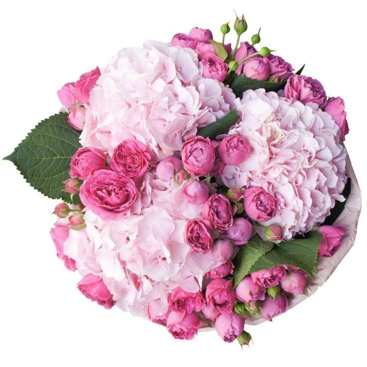
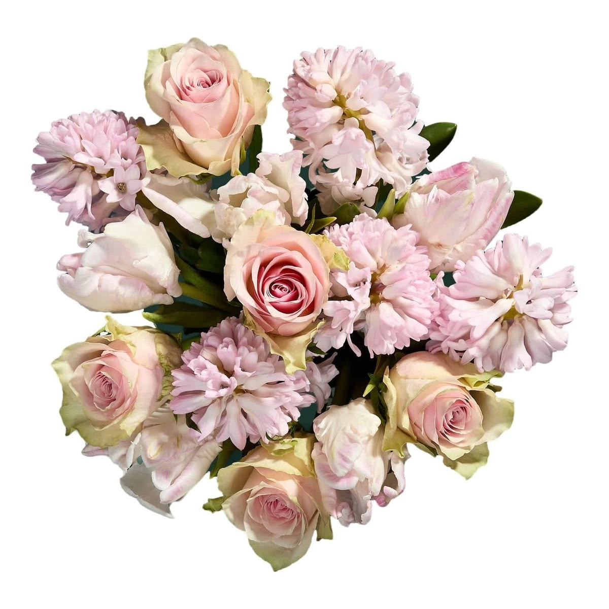
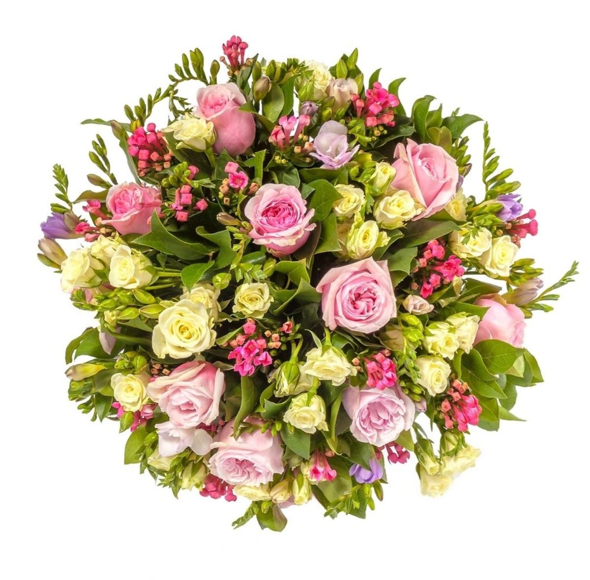
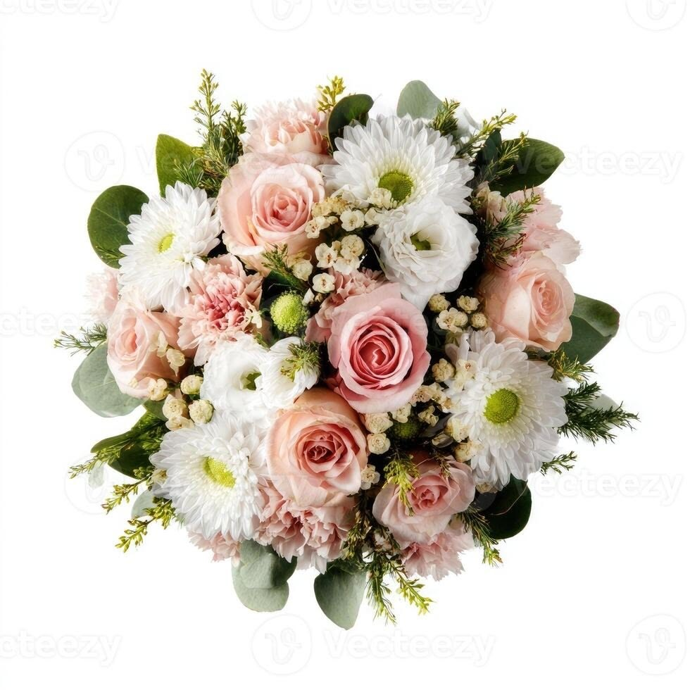
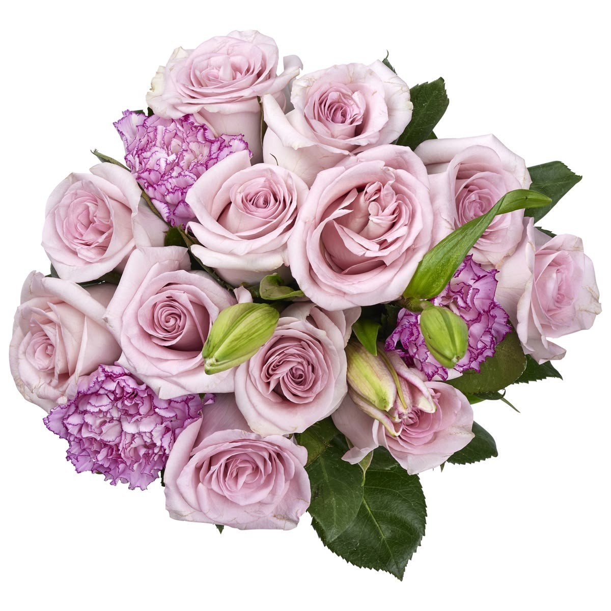
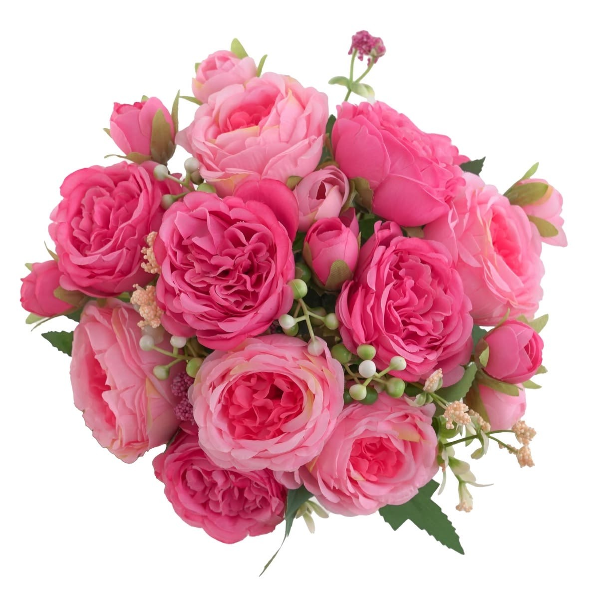
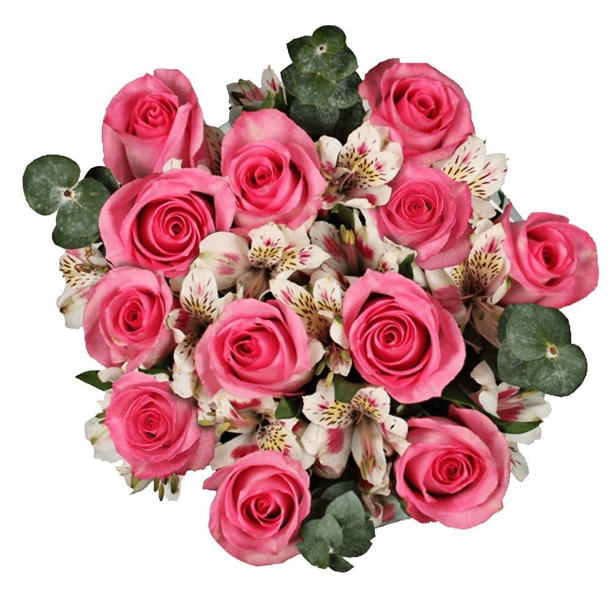

Blush Cloud Harmony
Soft, dreamy, and romantic
Flowers included: Light pink hydrangeas, deep pink roses, peonies
Care: Hydrangeas benefit from frequent misting. Keep in a cool spot away from direct sun. Change water every 2 days.
Why they pair well: The airy volume of hydrangeas creates a soft cloud-like base, while deep pink roses and peonies add rich color depth for a balanced romantic look.

Pastel Whisper Garden
Gentle pastels for a serene moment
Flowers included: Pale pink roses, blush hyacinths, white tulips
Care: Tulips keep growing in the vase — trim stems every 2 days. Hyacinths may need staking as blooms get heavy.
Why they pair well: The soft gradient of pale pink to blush to white creates a tranquil, monochromatic palette, with hyacinths adding gentle fragrance and tulips lending graceful height.

Rosy Meadow Bloom
Layered rose tones straight from the garden
Flowers included: Pink roses, cream roses, bright pink blossoms
Care: Remove thorns carefully. Trim stems at an angle every 2 days. Keep away from drafts and fruit bowls.
Why they pair well: The interplay of pink, cream, and bright pink roses creates a lush, garden-inspired gradient that feels both wild and refined.

Chrysanthemum Lace Bouquet
Textured charm with bright green centers
Flowers included: Chrysanthemums, spray roses, greenery
Care: Chrysanthemums are long-lasting — change water every 3 days. Remove lower leaves to keep water clean.
Why they pair well: The distinctive bright green centers of the chrysanthemums add a playful pop of contrast, while spray roses and greenery create a delicate lace-like texture.

Magenta Petal Symphony
Bold, vibrant, and full of energy
Flowers included: Magenta ranunculus, purple blooms, pink blossoms
Care: Ranunculus are delicate — handle gently. Keep in a cool room. Change water every 2 days to prevent bacteria.
Why they pair well: The bold magenta and purple tones create a striking symphonic blend, with ranunculus adding layered texture and the pink blossoms softening the intensity.

Lavender Rose Drift
Soft lavender meets classic rose
Flowers included: Lavender roses, spray lavender, baby's breath, eucalyptus
Care: Trim stems every 2 days. Keep in a cool spot away from direct sunlight. Mist lavender sprigs lightly.
Why they pair well: The muted purple of lavender roses blends seamlessly with fragrant spray lavender, while baby's breath adds airy volume and eucalyptus brings a fresh green contrast.

Peony Rose Lush
Lush, full, and romantic
Flowers included: Peonies, garden roses, spray roses, greenery
Care: Peonies benefit from support for heavy blooms. Change water every 2 days. Keep away from fruit to slow aging.
Why they pair well: The lush fullness of peonies is complemented by the classic form of garden roses, with spray roses adding texture and greenery providing a natural frame.

Rose & Alstroemeria Charm
Playful charm with vibrant accents
Flowers included: Pink roses, alstroemeria, waxflower, foliage
Care: Alstroemeria are long-lasting — remove lower leaves to keep water clean. Change water every 2-3 days.
Why they pair well: The striped petals of alstroemeria add playful contrast to classic pink roses, while waxflower and foliage create a charming wild-garden texture.